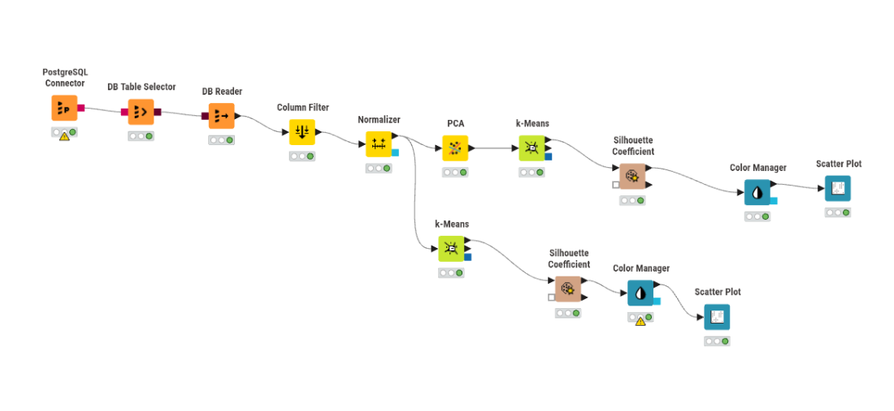

ANALISIS CLUSTERING DATA POLUTAN MENGGUNAKAN K-MEANS#
1. Tujuan Analisis#
Analisis ini dilakukan untuk mengelompokkan data polutan berdasarkan kemiripan karakteristik data yang direpresentasikan dalam bentuk fitur hasil ekstraksi TSFEL. Metode clustering yang digunakan adalah K-Means.
Data yang digunakan terdiri dari 37 data observasi dengan 68 fitur hasil ekstraksi TSFEL. Fitur tersebut menggambarkan karakteristik sinyal/data polutan dari masing-masing observasi.
Tujuan utama analisis adalah:
Mengelompokkan data polutan berdasarkan kemiripan karakteristik fiturnya.
Melakukan reduksi dimensi dari 68 fitur menjadi 37 dimensi menggunakan PCA.
Menentukan jumlah cluster yang sesuai untuk K-Means.
Mengevaluasi kualitas hasil clustering menggunakan Silhouette Coefficient.
Menganalisis hasil clustering berdasarkan dimensi PCA.
Membandingkan hasil clustering menggunakan 37 dimensi PCA dengan clustering menggunakan 68 fitur asli.
2. Tahapan Clastering Data#
Alur Workflow yang digunakan pada KNIME:

2.1 Data yang Digunakan#
Data diperoleh dari database PostgreSQL pada Aiven dan dibaca menggunakan KNIME melalui node DB Reader.
Setiap data memiliki informasi identitas seperti:
id
nama
daerah
serta 68 fitur hasil ekstraksi TSFEL.
Kolom id, nama, dan daerah tidak digunakan sebagai variabel clustering karena kolom tersebut merupakan informasi identitas, bukan karakteristik numerik yang ingin digunakan untuk mengukur kemiripan antar-data.
2.2 DB Reader#
Node DB Reader digunakan untuk membaca data yang tersimpan pada database PostgreSQL/Aiven.
Pada tahap ini, data dari tabel polutan dimasukkan ke dalam workflow KNIME sehingga dapat diproses oleh node-node berikutnya.
Data yang dibaca terdiri dari 37 baris data dan 68 fitur TSFEL, ditambah kolom identitas.
2.3 Column Filter#
Setelah data dibaca, digunakan node Column Filter. Tujuan tahap ini adalah menentukan kolom mana yang digunakan dalam proses clustering.
Kolom identitas (id,nama,daerah) tidak digunakan dalam proses K-Means, sedangkan seluruh data fitur TSFEL digunakan. Hal ini penting karena K-Means mengelompokkan data berdasarkan jarak antar-observasi. Jika kolom identitas ikut digunakan, hasil clustering dapat dipengaruhi oleh informasi yang sebenarnya tidak merepresentasikan karakteristik polutan.
2.4 Normalisasi Data#
Setelah seleksi fitur, data diproses menggunakan node Normalizer. Normalisasi dilakukan karena 68 fitur TSFEL dapat memiliki rentang nilai yang berbeda-beda.
Dalam K-Means, kemiripan antar-data dihitung berdasarkan jarak. Apabila satu fitur mempunyai nilai yang jauh lebih besar dibandingkan fitur lain, fitur tersebut dapat memberikan pengaruh lebih besar terhadap perhitungan jarak.
Oleh karena itu, normalisasi dilakukan agar fitur berada pada skala yang lebih sebanding sebelum digunakan dalam PCA dan K-Means.
2.5 Reduksi dimensi menjadi PCA#
Setelah normalisasi, dilakukan reduksi dimensi menggunakan Principal Component Analysis (PCA). Pada awalnya terdapat 68 fitur TSFEL, Kemudian dimensi data direduksi menjadi 37 dimensi PCA
Konfigurasi PCA yang digunakan adalah: Dimension(s) to reduce to Number of dimensions = 37
Selain itu juga ada: Remove original data columns, Tujuannya agar hasil output PCA tidak lagi membawa 68 fitur asli, tetapi hanya mempertahankan hasil transformasi PCA.
Penggunaan PCA bertujuan untuk menyederhanakan representasi data yang sebelumnya memiliki banyak fitur. Jika seluruh 68 fitur langsung digunakan, terdapat banyak variabel yang harus diproses oleh algoritma clustering.
PCA mengubah sekumpulan fitur asli menjadi sejumlah principal component yang merupakan representasi baru dari data.
2.6 Proses clastering menggunakan K-Means#
Setelah PCA selesai, data hasil PCA digunakan sebagai input algoritma K-Means.
K-Means bekerja dengan membagi data menjadi sejumlah kelompok atau cluster berdasarkan kemiripan karakteristik.
Permasalahan utama pada tahap ini adalah kita belum mengetahui berapa jumlah cluster yang sesuai.
Oleh karena itu dilakukan percobaan terhadap beberapa nilai K.
2.7 Evaluasi menggunakan silhouette coefficient#
Silhouette digunakan untuk melihat seberapa baik setiap data berada di dalam cluster-nya dibandingkan dengan cluster lainnya.
Nilainya berada pada rentang: -1 sampai 1
Secara umum:
nilai mendekati 1 menunjukkan pemisahan cluster yang semakin baik,
nilai mendekati 0 menunjukkan adanya kedekatan atau tumpang tindih antar-cluster,
nilai negatif dapat menunjukkan bahwa suatu data lebih dekat dengan cluster lain dibandingkan cluster tempat data tersebut ditempatkan.
Dalam KNIME, terdapat nilai untuk masing-masing cluster dan terdapat nilai Overall Mean Silhouette Coefficient
Untuk membandingkan kualitas K=2, K=3, dan seterusnya, nilai yang digunakan adalah Overall.
Hasil Clateriing K=2 - K=7
Jumlah Cluster (K) |
Overall Mean Silhouette |
|---|---|
2 |
0,741 |
3 |
0,168 |
4 |
0,192 |
5 |
0,073 |
6 |
0,14 |
7 |
0,096 |
Berdasarkan perbandingan nilai Overall Mean Silhouette, konfigurasi K=2 memiliki nilai tertinggi, yaitu 0,741. Oleh karena itu, K=2 dipilih sebagai jumlah cluster yang digunakan pada analisis selanjutnya karena pada data dan konfigurasi pengujian ini menghasilkan pemisahan cluster yang paling baik menurut metrik silhouette.
2.8 Visualisasi PCA#
Untuk membantu melihat hasil clustering secara visual, PCA 1 dan PCA 2 dapat digunakan sebagai sumbu grafik. Namun perlu diperhatikan bahwa grafik tersebut hanya menampilkan dua dimensi dari keseluruhan 37 dimensi.
Jadi apabila terdapat titik yang terlihat berdekatan pada grafik PCA 1 dan PCA 2, belum tentu kedua data tersebut benar-benar dekat pada keseluruhan ruang 37 dimensi.
Hasil clustering dapat digunakan untuk mengetahui apakah terdapat kelompok data yang mempunyai karakteristik fitur yang relatif mirip. Setiap cluster berisi data yang memiliki pola karakteristik yang relatif lebih dekat satu sama lain berdasarkan fitur yang digunakan.
2.9 Clastering menggunakan 68 fitur(tanpa reduksi PCA)#
Tujuannya adalah mengetahui apakah hasil clustering berbeda ketika seluruh fitur asli digunakan. Dengan demikian, kedua eksperimen dapat dibandingkan secara langsung berdasarkan hasil Silhouette.
Hasil K=2 - K=7 dari 68 fitur
Jumlah Cluster (K) |
Overall Mean Silhouette |
|---|---|
2 |
0,741 |
3 |
0,168 |
4 |
0,192 |
5 |
0,073 |
6 |
0,14 |
7 |
0,096 |
Berdasarkan hasil perbandingan, clustering menggunakan 37 dimensi hasil PCA menghasilkan nilai Overall Mean Silhouette yang sama dengan clustering menggunakan 68 fitur asli pada setiap nilai K yang diuji. Hal ini menunjukkan bahwa reduksi dari 68 fitur menjadi 37 dimensi tidak memberikan perubahan terhadap kualitas clustering berdasarkan nilai Silhouette. Dengan demikian, pada data yang digunakan, 37 dimensi hasil PCA mampu mempertahankan informasi yang diperlukan untuk proses clustering sehingga menghasilkan evaluasi yang sama dengan penggunaan 68 fitur asli.